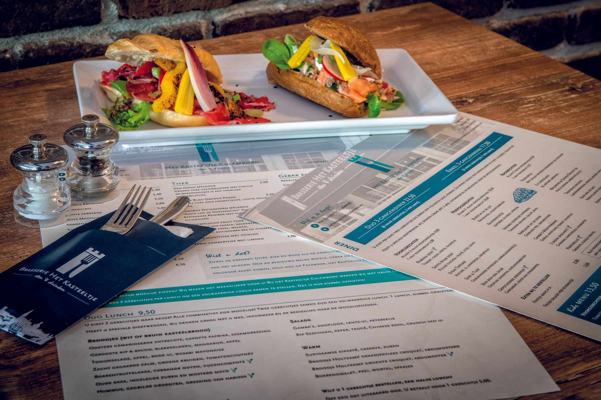
Brasserie op de Markt in Culemborg
Twee halve gerechtjes. Samen één lunch of gang.
Beleef en geniet: bij Het Kasteeltje kiest u niet één gerecht, maar twee halve. Zo proeft u meer van de kaart en hoeft u minder lastig te kiezen.
Net even anders
Kunt u ook altijd zo lastig kiezen? Bij Het Kasteeltje Culemborg doen we het net even anders.
Tijdens de lunch en het diner kiest u niet voor één gerecht, maar voor twee halve gerechtjes die samen een lunch of een gang van het diner vormen. Zo kunt u meer van de kaart proeven. De kaart wordt om de twee maanden vernieuwd, aan de hand van de smaken van het seizoen.
Liever verrast worden?
Kies dan het carte blanche menu: de chef verrast u met 6 halve gerechtjes (3 gangen) en laat zien wat hij in huis heeft. Met speciale dieetwensen houden wij altijd rekening.
- Seizoensgebonden
- Vegavriendelijk
- Hoge kwaliteit
- Kukki-cocktails
De kaart van dit moment
De kaart wisselt elke twee maanden mee met het seizoen. V = vegetarisch.
14,50
Broodjes
Wit, bruin of glutenvrij (+1,00)
- Gebraden rosbief scharrelei, remouladesaus
- Gemarineerde entrecote tip mosterd, sinaasappelchutney
- Gestoomde zalm gepofte tomaat, groene kruidenmayonaise
- Boerenomelet knapperige groenten, spekjes, kaas
- Texelse notenkaas V piccalilly, augurk, peterselieolie
- Holtkamp draadjesvleescroquette mosterdmayo, aardappelsalade
Salade +2,50
- Gemarineerde watermeloen V fetakaas, rucola, pecannoten
- Gamba piri piri groene asperges, knoflookcroutons
- Ossenhaaspuntjes roerbakgroenten, zwarte pepersaus
Soep
- Romatomaat V groentjes, cajunkruiden, crème fraîche
- Thai Boat tip kruidenbouillon, ossenhaas, taugé, noodles
Specials +1,50
- Broodje kip kebab knapperige sla, knoflooksaus, sambalsaus
- Libanees brood met tonijn pesto, bosui, tomaat, cheddar
- Libanees brood met kruidenhummus V gepofte tomaat, raita
Erbij
- Frietje mayonaise4,75
- Kinderspecial: panini ham, kaas en ketchup7,65
45,00
Voorgerechten
2 halve 14,75 · 1 half 7,75
- Thai Boat kruidenbouillon, ossenhaas, taugé, noodles
- Soep van romatomaat V
- Surf en turf tip gemarineerde runderlende, mosterd, groene kruiden, garnalenkroket
- Sashimi van zalm sesamdressing, wasabi cracker
- Ravioli van spinazie en ricotta V kerrieolie, pijnboompitjes
- Gamba's Vietnam style knoflook, sesam, limoenblad, pepertje
Hoofdgerechten
2 halve 24,50 · 1 half 13,50
- Indonesische rendang tip knoflook, sereh, kokos, pepertjes
- Spies van ossenhaas +2,50 stroganoffsaus, gefrituurde uitjes
- Kip tandoori pannetje kippendij, aardappel, tandoori jus, raita
- Vis van de markt wisselend visgerecht van de chef
- Varkenshaas medaillon spekjes, rode peperjus
- Stoof van paddenstoelen V groene kruidensaus, pompoenpitten, landbrood
- Zomerrisotto V tomaat, venkel, Italiaanse kruiden
Nagerechten
2 halve 11,75 · 1 half 6,50
- Banoffee trifle
- Aardbeiensorbetijs verse aardbeien, muntsiroop
- Pastel de nata perzikroomijs
- Kaas van de dag +2,50
- Koffie of thee naar keuze met een traktatie
- Glas dessertwijn
- Glas port
- Glas Pedro Ximénez
Erbij
- Frietje mayo, per persoon4,75
- Gebakken aardappelen met mayo5,75
- Frisse salade, per schaaltje4,50
- Geroosterde groente, per schaaltje4,50
Kidsmenu 16,00
- Voor: komkommerknabbels met dip, brood met boter V4,50
- Hoofd: kroket, mini loempia V of biefstukje (+3,00), met frietjes, mayo of ketchup en salade8,50
- Na: 2 bolletjes ijs4,50
Koffie
- Koffie3,20
- Espresso3,20
- Dubbele espresso4,30
- Cappuccino3,60
- Koffie verkeerd3,90
- Latte macchiato4,10
- topping caramel of witte chocolade+0,50
- topping pumpkin spice+1,50
- Flat white4,70
- Chai latte3,90
- Pink chai latte4,50
- sojamelk+0,75
- Irish, Spanish, Italian, French of Brazilian coffee7,70
Thee
- Fruitthee3,10
- Kopje Geluk (Earl Grey)3,10
- Rooibos melange3,10
- Jasmijn3,20
- Verse munt met honing3,75
- Verse gember met citroen3,75
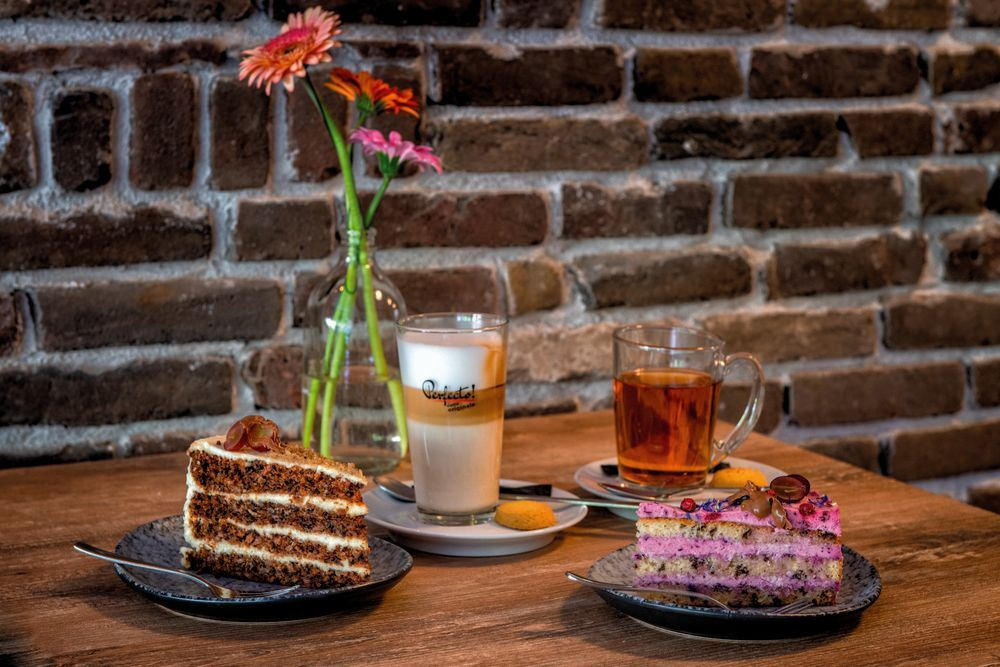
Zoet
- Appeltaart met slagroom4,50
- Wisselend gebakv.a. 5,50
- Banoffee trifle6,50
- Pastel de nata6,50
- IJskoffie (vanaf 1 april)6,00
- IJskoffie met topping (vanaf 1 april)6,75
- Warme chocomel3,75
- met slagroom4,25
Borrel
Ook voor een borrel met borrelhapjes, een High Wine of een High Beer bent u welkom. Vraag gerust naar de mogelijkheden.
Kerstavond bij Het Kasteeltje
24 december 2026
Een 4-gangen kerstdiner voor 59,50 p.p. (exclusief optionele keuzes). Reserveer op tijd via 0345-549339.
Bel om te reserveren-
Kersttrio
Carpaccio van hert, abrikozenvinaigrette, pistache
Hollandse garnalencocktail, saffraanmayonaise
Terrine van knolselderij, zwarte knoflook aioli
-
Soep, naar keuze
Licht gebonden ossenstaartsoep, gerookte prei, peperroom
Rode currysoep, shiitake, noodles
-
Hoofdgerecht, naar keuze
Zeebaarsfilet, duxelles van rivierkreeft, kappertjes, grotchampignon
Gebraden ossenhaas, oosterse garnituren, saus van peper en zwarte bonen
Ratatouille, courgette, aubergine, rode ui, tomaat, camembert
Optioneel: kaasplankje met 4 kazen, 12,50
-
Dessert
Sparkling green
Op 1e en 2e kerstdag is er ook een kerstmenu voor thuis. Vraag naar de kaart en de mogelijkheden via info@hetkasteeltjeculemborg.nl of 0345-549339.
Uit onze keuken
Het Kasteeltje Culemborg maakt voor u de mooiste gerechten, met veel beleving en sfeer. Een kijkje bij een aantal favorieten.
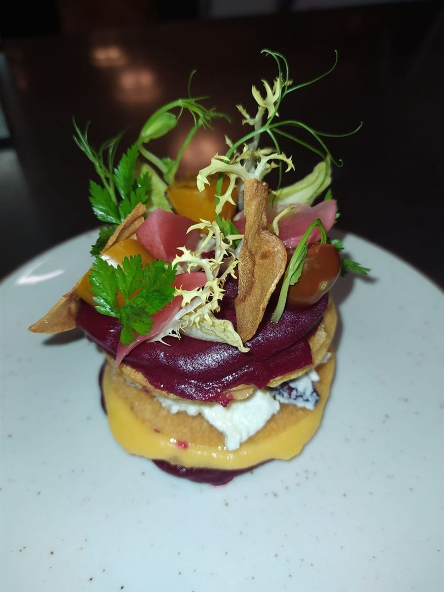
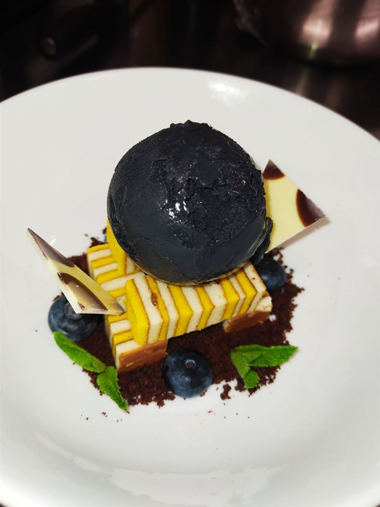
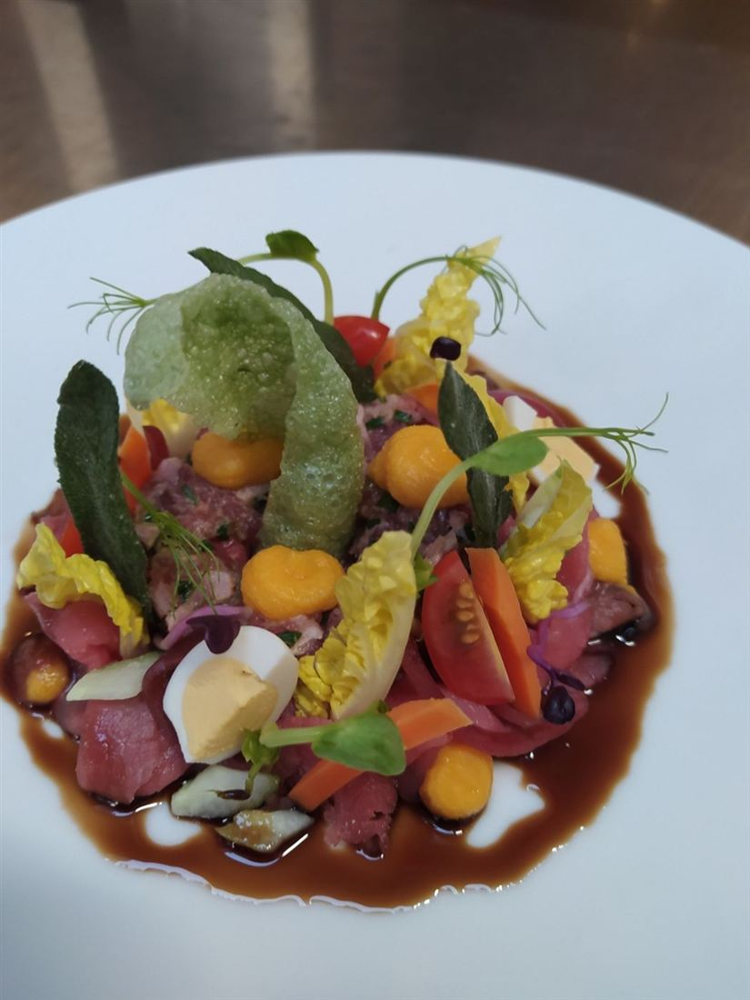
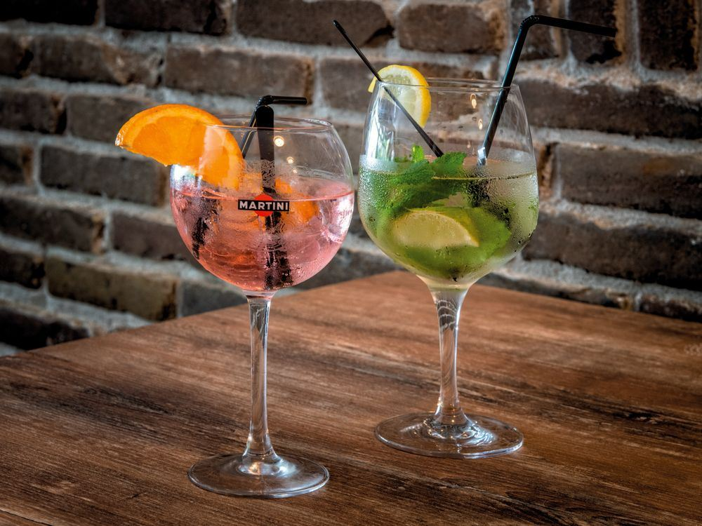
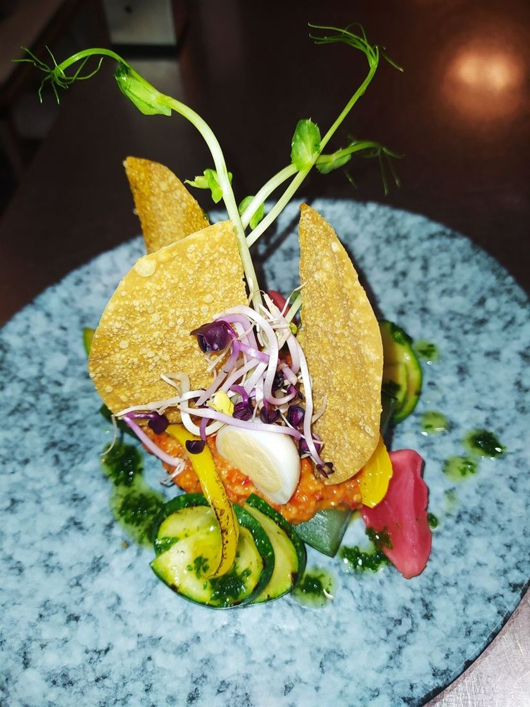
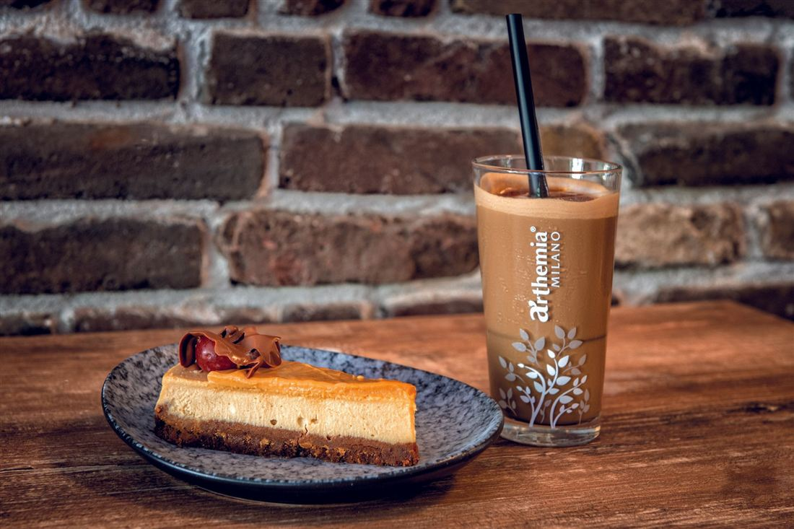
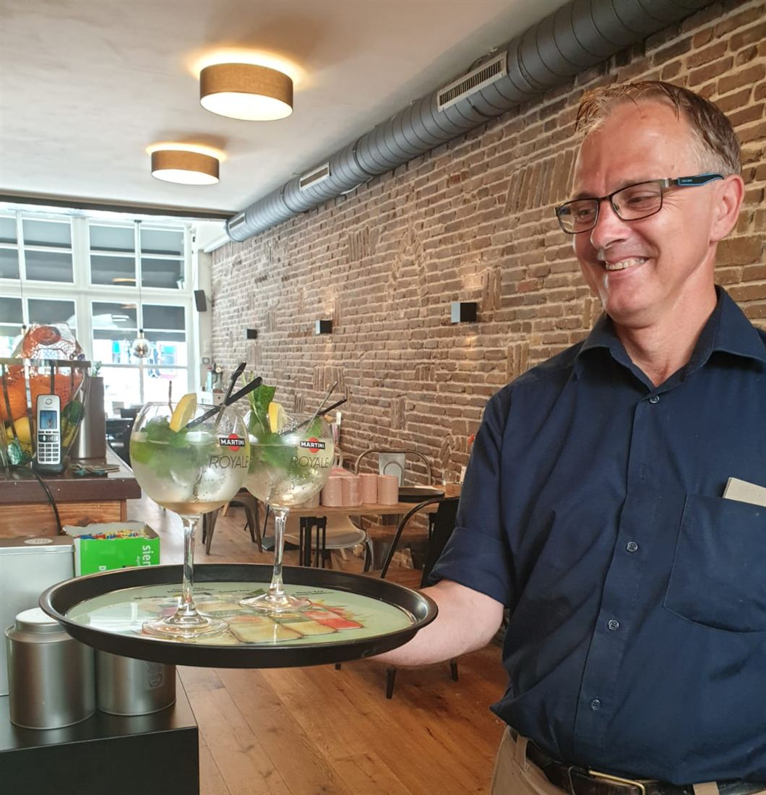
Ons verhaal
Wij zijn Roland en Debbie van Ommeren en sinds mei 2021 exploiteren wij Het Kasteeltje Culemborg, op de gezellige markt in het centrum van Culemborg.
Zelf zijn we echte Bourgondiërs en vinden het belangrijk om onze gasten te verrassen, zowel op culinair gebied als in gastvrijheid. Bij Het Kasteeltje willen we elke dag opnieuw heerlijke gerechten maken, serveren en u ervan laten genieten. We houden van verse ingrediënten, smaakvol eten en voedsel uit het seizoen.
Bij ons kunt u ook terecht voor een lekker kopje koffie of thee met ambachtelijk gebak, of een borrel met heerlijke borrelhapjes.
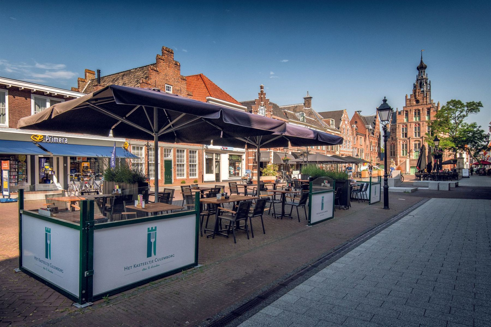
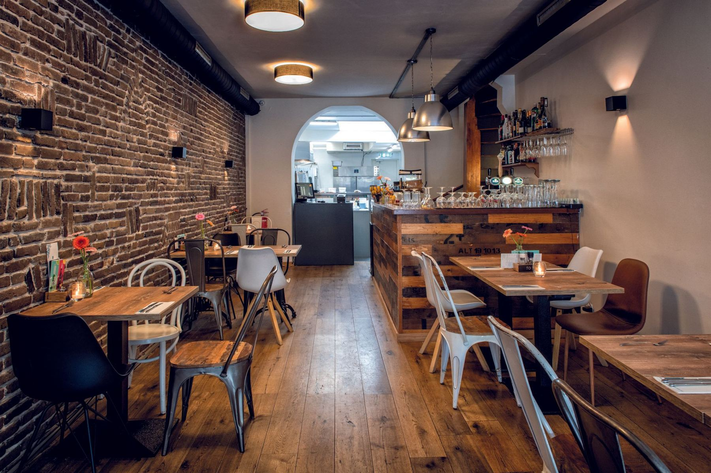
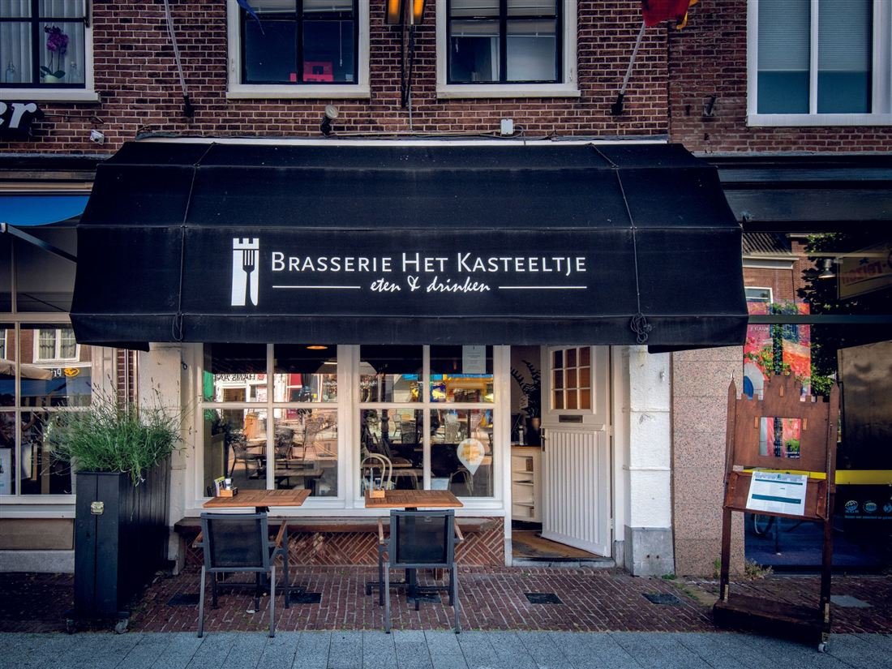
Geef een avondje Kasteeltje cadeau
De gezelligste cadeaubon van Culemborg, voor lunch, diner, borrel, High Wine of High Beer. Vraag ernaar in de zaak of via info@hetkasteeltjeculemborg.nl.
Openingstijden
| Maandag | 11:00 – 22:00 |
|---|---|
| Dinsdag | 10:30 – 22:00 |
| Woensdag | gesloten |
| Donderdag | gesloten |
| Vrijdag | 11:00 – 23:00 |
| Zaterdag | 10:30 – 23:00 |
| Zondag | 11:00 – 22:00 |
Contact met ons opnemen
Reserveren gaat het snelst telefonisch via 0345-549339. Een vraag over een dieetwens, een groep of de cadeaubon? Stuur ons gerust een bericht.